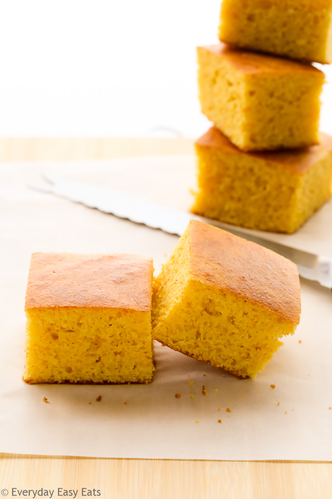

Buttermilk Cornbread

best sweet cornbread
This Easy Buttermilk Cornbread is hands down my favourite cornbread passed down to me from my mother’s tattered collection of recipes, and tweaked only slightly to make it even more incredible
if that’s at all possible! Plus it’s so versatile it can be made in either a skillet or baking dish and all prepared in ONE BOWL!
Ingredients
- 1/2 cup unsalted butter melted and cooled slightly
- 1 cup all-purpose flour
- 1 cup yellow cornmeal (or polenta)
- 1/4 cup brown sugar (or white granulated sugar)
- 1 teaspoon baking powder (optional: yields a fluffier cornbread)
- 1/4 teaspoon salt
- 1 cup buttermilk shake before measuring
- 1/4 cup honey
- 2 large eggs
Steps
- Preheat the oven to 200C | 400F and position a rack in the middle.
- Lightly grease a 9-inch cast iron skillet or 9-inch square baking dish with butter and place skillet/dish into the oven to heat up.
- In a large bowl, whisk together the flour, cornmeal, sugar
- Make a well in the centre and add the buttermilk, honey and eggs
- Mix together well to combine, then add in the slightly cooled melted butter. Mix again
- Carefully remove your 'hot' pan or dish from the oven with oven mitts
- pour the batter into the hot skillet or dish.
- Bake until the cornbread begins to brown on top and a toothpick inserted in the centre comes out clean (about 20-23 minutes)
- Allow to cool for about 10 minutes before slicing and serving.
home